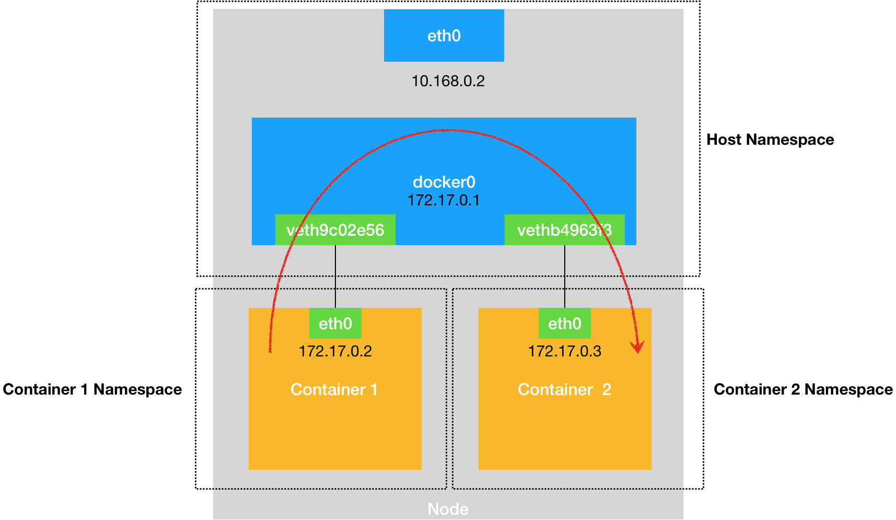
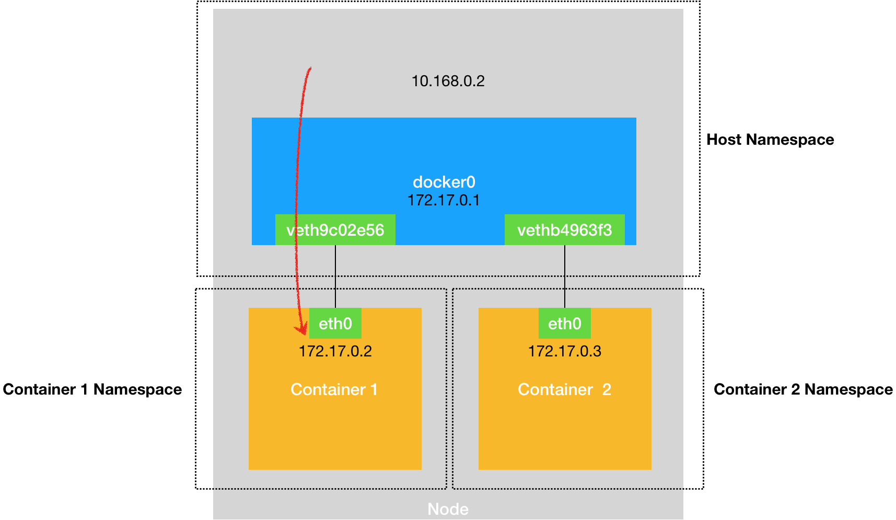
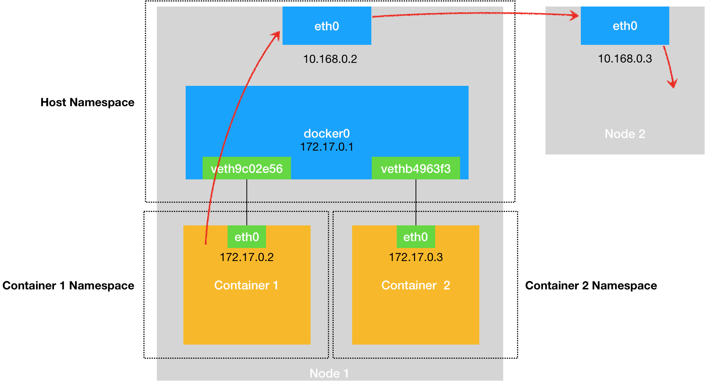
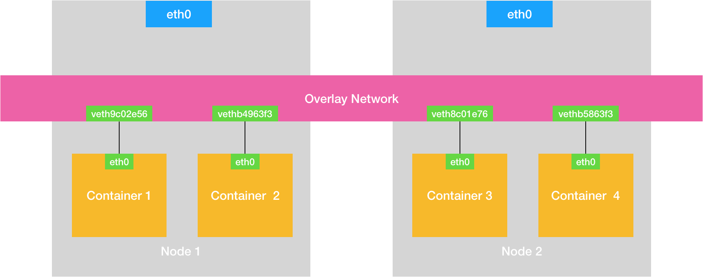

- 00 开篇词 打通“容器技术”的任督二脉.md
- 01 预习篇 · 小鲸鱼大事记（一）：初出茅庐.md
- 02 预习篇 · 小鲸鱼大事记（二）：崭露头角.md
- 03 预习篇 · 小鲸鱼大事记（三）：群雄并起.md
- 04 预习篇 · 小鲸鱼大事记（四）：尘埃落定.md
- 05 白话容器基础（一）：从进程说开去.md
- 06 白话容器基础（二）：隔离与限制.md
- 07 白话容器基础（三）：深入理解容器镜像.md
- 08 白话容器基础（四）：重新认识Docker容器.md
- 09 从容器到容器云：谈谈Kubernetes的本质.md
- 10 Kubernetes一键部署利器：kubeadm.md
- 11 从0到1：搭建一个完整的Kubernetes集群.md
- 12 牛刀小试：我的第一个容器化应用.md
- 13 为什么我们需要Pod？.md
- 14 深入解析Pod对象（一）：基本概念.md
- 15 深入解析Pod对象（二）：使用进阶.md
- 16 编排其实很简单：谈谈“控制器”模型.md
- 17 经典PaaS的记忆：作业副本与水平扩展.md
- 18 深入理解StatefulSet（一）：拓扑状态.md
- 19 深入理解StatefulSet（二）：存储状态.md
- 20 深入理解StatefulSet（三）：有状态应用实践.md
- 21 容器化守护进程的意义：DaemonSet.md
- 22 撬动离线业务：Job与CronJob.md
- 23 声明式API与Kubernetes编程范式.md
- 24 深入解析声明式API（一）：API对象的奥秘.md
- 25 深入解析声明式API（二）：编写自定义控制器.md
- 26 基于角色的权限控制：RBAC.md
- 27 聪明的微创新：Operator工作原理解读.md
- 28 PV、PVC、StorageClass，这些到底在说啥？.md
- 29 PV、PVC体系是不是多此一举？从本地持久化卷谈起.md
- 30 编写自己的存储插件：FlexVolume与CSI.md
- 31 容器存储实践：CSI插件编写指南.md
- 32 浅谈容器网络.md
- 33 深入解析容器跨主机网络.md
- 34 Kubernetes网络模型与CNI网络插件.md
- 35 解读Kubernetes三层网络方案.md
- 36 为什么说Kubernetes只有soft multi-tenancy？.md
- 37 找到容器不容易：Service、DNS与服务发现.md
- 38 从外界连通Service与Service调试“三板斧”.md
- 39 谈谈Service与Ingress.md
- 40 Kubernetes的资源模型与资源管理.md
- 41 十字路口上的Kubernetes默认调度器.md
- 42 Kubernetes默认调度器调度策略解析.md
- 43 Kubernetes默认调度器的优先级与抢占机制.md
- 44 Kubernetes GPU管理与Device Plugin机制.md
- 45 幕后英雄：SIG-Node与CRI.md
- 46 解读 CRI 与 容器运行时.md
- 47 绝不仅仅是安全：Kata Containers 与 gVisor.md
- 48 Prometheus、Metrics Server与Kubernetes监控体系.md
- 49 Custom Metrics_ 让Auto Scaling不再“食之无味”.md
- 50 让日志无处可逃：容器日志收集与管理.md
- 51 谈谈Kubernetes开源社区和未来走向.md
- 52 答疑：在问题中解决问题，在思考中产生思考.md
- 特别放送 2019 年，容器技术生态会发生些什么？.md
- 特别放送 基于 Kubernetes 的云原生应用管理，到底应该怎么做？.md
- 结束语 Kubernetes：赢开发者赢天下.md
32 浅谈容器网络
你好，我是张磊。今天我和你分享的主题是：浅谈容器网络。
在前面讲解容器基础时，我曾经提到过一个Linux容器能看见的“网络栈”，实际上是被隔离在它自己的Network Namespace当中的。
而所谓“网络栈”，就包括了：网卡（Network Interface）、回环设备（Loopback Device）、路由表（Routing Table）和iptables规则。对于一个进程来说，这些要素，其实就构成了它发起和响应网络请求的基本环境。
需要指出的是，作为一个容器，它可以声明直接使用宿主机的网络栈（–net=host），即：不开启Network Namespace，比如：
$ docker run –d –net=host --name nginx-host nginx
在这种情况下，这个容器启动后，直接监听的就是宿主机的80端口。
像这样直接使用宿主机网络栈的方式，虽然可以为容器提供良好的网络性能，但也会不可避免地引入共享网络资源的问题，比如端口冲突。所以，在大多数情况下，我们都希望容器进程能使用自己Network Namespace里的网络栈，即：拥有属于自己的IP地址和端口。
这时候，一个显而易见的问题就是：这个被隔离的容器进程，该如何跟其他Network Namespace里的容器进程进行交互呢？
为了理解这个问题，你其实可以把每一个容器看做一台主机，它们都有一套独立的“网络栈”。
如果你想要实现两台主机之间的通信，最直接的办法，就是把它们用一根网线连接起来；而如果你想要实现多台主机之间的通信，那就需要用网线，把它们连接在一台交换机上。
在Linux中，能够起到虚拟交换机作用的网络设备，是网桥（Bridge）。它是一个工作在数据链路层（Data Link）的设备，主要功能是根据MAC地址学习来将数据包转发到网桥的不同端口（Port）上。
当然，至于为什么这些主机之间需要MAC地址才能进行通信，这就是网络分层模型的基础知识了。不熟悉这块内容的读者，可以通过这篇文章来学习一下。
而为了实现上述目的，Docker项目会默认在宿主机上创建一个名叫docker0的网桥，凡是连接在docker0网桥上的容器，就可以通过它来进行通信。
可是，我们又该如何把这些容器“连接”到docker0网桥上呢？
这时候，我们就需要使用一种名叫Veth Pair的虚拟设备了。
Veth Pair设备的特点是：它被创建出来后，总是以两张虚拟网卡（Veth Peer）的形式成对出现的。并且，从其中一个“网卡”发出的数据包，可以直接出现在与它对应的另一张“网卡”上，哪怕这两个“网卡”在不同的Network Namespace里。
这就使得Veth Pair常常被用作连接不同Network Namespace 的“网线”。
比如，现在我们启动了一个叫作nginx-1的容器：
$ docker run –d --name nginx-1 nginx
然后进入到这个容器中查看一下它的网络设备：
# 在宿主机上
$ docker exec -it nginx-1 /bin/bash
# 在容器里
root@2b3c181aecf1:/# ifconfig
eth0: flags=4163<UP,BROADCAST,RUNNING,MULTICAST> mtu 1500
inet 172.17.0.2 netmask 255.255.0.0 broadcast 0.0.0.0
inet6 fe80::42:acff:fe11:2 prefixlen 64 scopeid 0x20<link>
ether 02:42:ac:11:00:02 txqueuelen 0 (Ethernet)
RX packets 364 bytes 8137175 (7.7 MiB)
RX errors 0 dropped 0 overruns 0 frame 0
TX packets 281 bytes 21161 (20.6 KiB)
TX errors 0 dropped 0 overruns 0 carrier 0 collisions 0
lo: flags=73<UP,LOOPBACK,RUNNING> mtu 65536
inet 127.0.0.1 netmask 255.0.0.0
inet6 ::1 prefixlen 128 scopeid 0x10<host>
loop txqueuelen 1000 (Local Loopback)
RX packets 0 bytes 0 (0.0 B)
RX errors 0 dropped 0 overruns 0 frame 0
TX packets 0 bytes 0 (0.0 B)
TX errors 0 dropped 0 overruns 0 carrier 0 collisions 0
$ route
Kernel IP routing table
Destination Gateway Genmask Flags Metric Ref Use Iface
default 172.17.0.1 0.0.0.0 UG 0 0 0 eth0
172.17.0.0 0.0.0.0 255.255.0.0 U 0 0 0 eth0
可以看到，这个容器里有一张叫作eth0的网卡，它正是一个Veth Pair设备在容器里的这一端。
通过route命令查看nginx-1容器的路由表，我们可以看到，这个eth0网卡是这个容器里的默认路由设备；所有对172.17.0.0/16网段的请求，也会被交给eth0来处理（第二条172.17.0.0路由规则）。
而这个Veth Pair设备的另一端，则在宿主机上。你可以通过查看宿主机的网络设备看到它，如下所示：
# 在宿主机上
$ ifconfig
...
docker0 Link encap:Ethernet HWaddr 02:42:d8:e4:df:c1
inet addr:172.17.0.1 Bcast:0.0.0.0 Mask:255.255.0.0
inet6 addr: fe80::42:d8ff:fee4:dfc1/64 Scope:Link
UP BROADCAST RUNNING MULTICAST MTU:1500 Metric:1
RX packets:309 errors:0 dropped:0 overruns:0 frame:0
TX packets:372 errors:0 dropped:0 overruns:0 carrier:0
collisions:0 txqueuelen:0
RX bytes:18944 (18.9 KB) TX bytes:8137789 (8.1 MB)
veth9c02e56 Link encap:Ethernet HWaddr 52:81:0b:24:3d:da
inet6 addr: fe80::5081:bff:fe24:3dda/64 Scope:Link
UP BROADCAST RUNNING MULTICAST MTU:1500 Metric:1
RX packets:288 errors:0 dropped:0 overruns:0 frame:0
TX packets:371 errors:0 dropped:0 overruns:0 carrier:0
collisions:0 txqueuelen:0
RX bytes:21608 (21.6 KB) TX bytes:8137719 (8.1 MB)
$ brctl show
bridge name bridge id STP enabled interfaces
docker0 8000.0242d8e4dfc1 no veth9c02e56
通过ifconfig命令的输出，你可以看到，nginx-1容器对应的Veth Pair设备，在宿主机上是一张虚拟网卡。它的名字叫作veth9c02e56。并且，通过brctl show的输出，你可以看到这张网卡被“插”在了docker0上。
这时候，如果我们再在这台宿主机上启动另一个Docker容器，比如nginx-2：
$ docker run –d --name nginx-2 nginx
$ brctl show
bridge name bridge id STP enabled interfaces
docker0 8000.0242d8e4dfc1 no veth9c02e56
vethb4963f3
你就会发现一个新的、名叫vethb4963f3的虚拟网卡，也被“插”在了docker0网桥上。
这时候，如果你在nginx-1容器里ping一下nginx-2容器的IP地址（172.17.0.3），就会发现同一宿主机上的两个容器默认就是相互连通的。
这其中的原理其实非常简单，我来解释一下。
当你在nginx-1容器里访问nginx-2容器的IP地址（比如ping 172.17.0.3）的时候，这个目的IP地址会匹配到nginx-1容器里的第二条路由规则。可以看到，这条路由规则的网关（Gateway）是0.0.0.0，这就意味着这是一条直连规则，即：凡是匹配到这条规则的IP包，应该经过本机的eth0网卡，通过二层网络直接发往目的主机。
而要通过二层网络到达nginx-2容器，就需要有172.17.0.3这个IP地址对应的MAC地址。所以nginx-1容器的网络协议栈，就需要通过eth0网卡发送一个ARP广播，来通过IP地址查找对应的MAC地址。
备注：ARP（Address Resolution Protocol），是通过三层的IP地址找到对应的二层MAC地址的协议。
我们前面提到过，这个eth0网卡，是一个Veth Pair，它的一端在这个nginx-1容器的Network Namespace里，而另一端则位于宿主机上（Host Namespace），并且被“插”在了宿主机的docker0网桥上。
一旦一张虚拟网卡被“插”在网桥上，它就会变成该网桥的“从设备”。从设备会被“剥夺”调用网络协议栈处理数据包的资格，从而“降级”成为网桥上的一个端口。而这个端口唯一的作用，就是接收流入的数据包，然后把这些数据包的“生杀大权”（比如转发或者丢弃），全部交给对应的网桥。
所以，在收到这些ARP请求之后，docker0网桥就会扮演二层交换机的角色，把ARP广播转发到其他被“插”在docker0上的虚拟网卡上。这样，同样连接在docker0上的nginx-2容器的网络协议栈就会收到这个ARP请求，从而将172.17.0.3所对应的MAC地址回复给nginx-1容器。
有了这个目的MAC地址，nginx-1容器的eth0网卡就可以将数据包发出去。
而根据Veth Pair设备的原理，这个数据包会立刻出现在宿主机上的veth9c02e56虚拟网卡上。不过，此时这个veth9c02e56网卡的网络协议栈的资格已经被“剥夺”，所以这个数据包就直接流入到了docker0网桥里。
docker0处理转发的过程，则继续扮演二层交换机的角色。此时，docker0网桥根据数据包的目的MAC地址（也就是nginx-2容器的MAC地址），在它的CAM表（即交换机通过MAC地址学习维护的端口和MAC地址的对应表）里查到对应的端口（Port）为：vethb4963f3，然后把数据包发往这个端口。
而这个端口，正是nginx-2容器“插”在docker0网桥上的另一块虚拟网卡，当然，它也是一个Veth Pair设备。这样，数据包就进入到了nginx-2容器的Network Namespace里。
所以，nginx-2容器看到的情况是，它自己的eth0网卡上出现了流入的数据包。这样，nginx-2的网络协议栈就会对请求进行处理，最后将响应（Pong）返回到nginx-1。
以上，就是同一个宿主机上的不同容器通过docker0网桥进行通信的流程了。我把这个流程总结成了一幅示意图，如下所示：

- 需要注意的是，在实际的数据传递时，上述数据的传递过程在网络协议栈的不同层次，都有Linux内核Netfilter参与其中。所以，如果感兴趣的话，你可以通过打开iptables的TRACE功能查看到数据包的传输过程，具体方法如下所示：# 在宿主机上执行
$ iptables -t raw -A OUTPUT -p icmp -j TRACE
$ iptables -t raw -A PREROUTING -p icmp -j TRACE
通过上述设置，你就可以在/var/log/syslog里看到数据包传输的日志了。这一部分内容，你可以在课后结合iptables的相关知识进行实践，从而验证我和你分享的数据包传递流程。
熟悉了docker0网桥的工作方式，你就可以理解，在默认情况下，被限制在Network Namespace里的容器进程，实际上是通过Veth Pair设备+宿主机网桥的方式，实现了跟同其他容器的数据交换。
与之类似地，当你在一台宿主机上，访问该宿主机上的容器的IP地址时，这个请求的数据包，也是先根据路由规则到达docker0网桥，然后被转发到对应的Veth Pair设备，最后出现在容器里。这个过程的示意图，如下所示：

- 同样地，当一个容器试图连接到另外一个宿主机时，比如：ping 10.168.0.3，它发出的请求数据包，首先经过docker0网桥出现在宿主机上。然后根据宿主机的路由表里的直连路由规则（10.168.0.0/24 via eth0)），对10.168.0.3的访问请求就会交给宿主机的eth0处理。所以接下来，这个数据包就会经宿主机的eth0网卡转发到宿主机网络上，最终到达10.168.0.3对应的宿主机上。当然，这个过程的实现要求这两台宿主机本身是连通的。这个过程的示意图，如下所示：

- 所以说，当你遇到容器连不通“外网”的时候，你都应该先试试docker0网桥能不能ping通，然后查看一下跟docker0和Veth Pair设备相关的iptables规则是不是有异常，往往就能够找到问题的答案了。不过，在最后一个“Docker容器连接其他宿主机”的例子里，你可能已经联想到了这样一个问题：如果在另外一台宿主机（比如：10.168.0.3）上，也有一个Docker容器。那么，我们的nginx-1容器又该如何访问它呢？
这个问题，其实就是容器的“跨主通信”问题。
在Docker的默认配置下，一台宿主机上的docker0网桥，和其他宿主机上的docker0网桥，没有任何关联，它们互相之间也没办法连通。所以，连接在这些网桥上的容器，自然也没办法进行通信了。
不过，万变不离其宗。
如果我们通过软件的方式，创建一个整个集群“公用”的网桥，然后把集群里的所有容器都连接到这个网桥上，不就可以相互通信了吗？
说得没错。
这样一来，我们整个集群里的容器网络就会类似于下图所示的样子：

- 可以看到，构建这种容器网络的核心在于：我们需要在已有的宿主机网络上，再通过软件构建一个覆盖在已有宿主机网络之上的、可以把所有容器连通在一起的虚拟网络。所以，这种技术就被称为：Overlay Network（覆盖网络）。而这个Overlay Network本身，可以由每台宿主机上的一个“特殊网桥”共同组成。比如，当Node 1上的Container 1要访问Node 2上的Container 3的时候，Node 1上的“特殊网桥”在收到数据包之后，能够通过某种方式，把数据包发送到正确的宿主机，比如Node 2上。而Node 2上的“特殊网桥”在收到数据包后，也能够通过某种方式，把数据包转发给正确的容器，比如Container 3。
甚至，每台宿主机上，都不需要有一个这种特殊的网桥，而仅仅通过某种方式配置宿主机的路由表，就能够把数据包转发到正确的宿主机上。这些内容，我在后面的文章中会为你一一讲述。
总结
在今天这篇文章中，我主要为你介绍了在本地环境下，单机容器网络的实现原理和docker0网桥的作用。
这里的关键在于，容器要想跟外界进行通信，它发出的IP包就必须从它的Network Namespace里出来，来到宿主机上。
而解决这个问题的方法就是：为容器创建一个一端在容器里充当默认网卡、另一端在宿主机上的Veth Pair设备。
上述单机容器网络的知识，是后面我们讲解多机容器网络的重要基础，请务必认真消化理解。
思考题
尽管容器的Host Network模式有一些缺点，但是它性能好、配置简单，并且易于调试，所以很多团队会直接使用Host Network。那么，如果要在生产环境中使用容器的Host Network模式，你觉得需要做哪些额外的准备工作呢？
感谢你的收听，欢迎你给我留言，也欢迎分享给更多的朋友一起阅读。
© 2019 - 2023 Liangliang Lee. Powered by gin and hexo-theme-book.